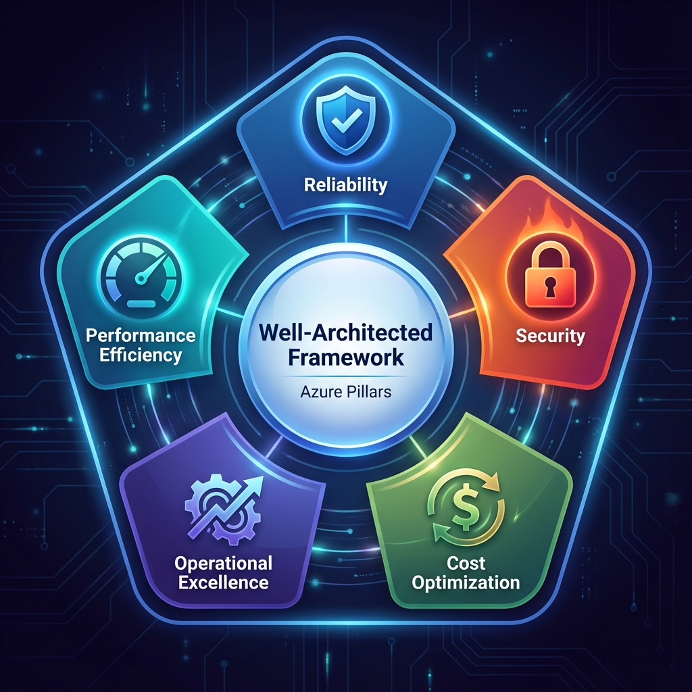
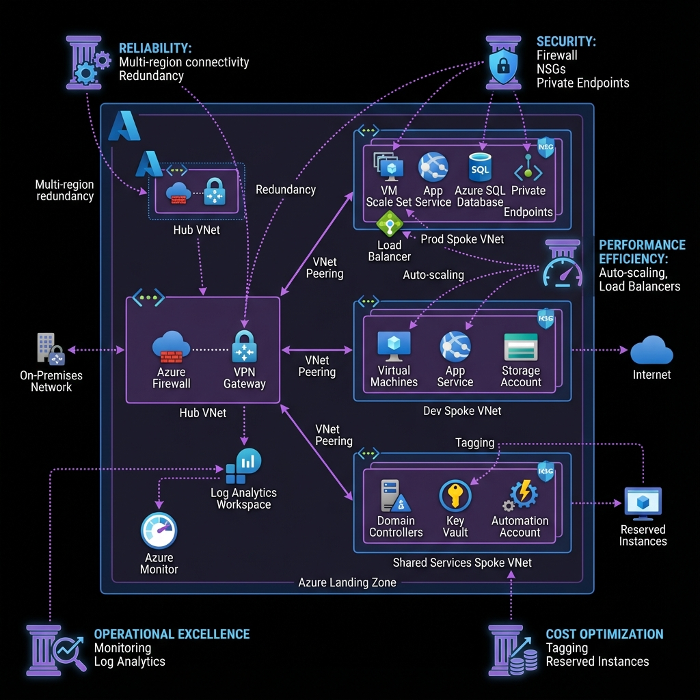
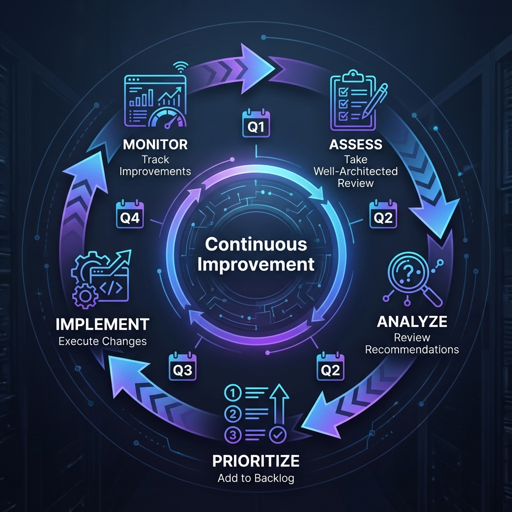
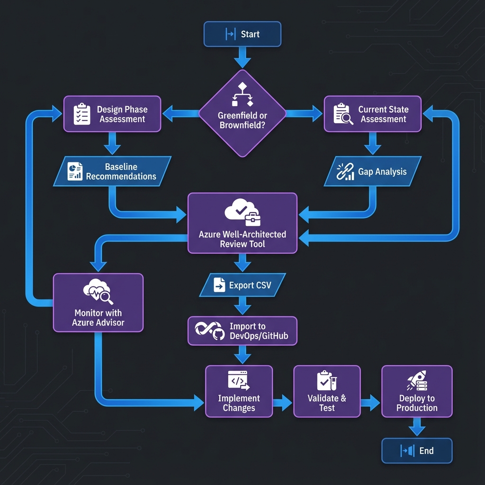

Azure Landing Zones provide the foundational architecture for enterprise-scale cloud adoption. This comprehensive guide explores best practices, governance patterns, and security frameworks.
What are Azure Landing Zones?
Azure Landing Zones are pre-configured environments that provide a secure, scalable foundation for your cloud workloads. They implement Microsoft's Cloud Adoption Framework (CAF) best practices and ensure your Azure environment is ready for enterprise-scale deployments.
Key Components
- Management Groups: Hierarchical organization of subscriptions for policy and access management
- Subscriptions: Logical containers for resources with billing and access boundaries
- Networking: Hub-and-spoke topology with centralized connectivity and security
- Identity: Azure Active Directory integration with RBAC and conditional access
- Governance: Azure Policy for compliance and automated guardrails
- Security: Microsoft Defender for Cloud and security baselines
Architecture Patterns
The most common pattern is the Hub-and-Spoke topology, where:
- Hub VNet: Contains shared services like Azure Firewall, VPN Gateway, and ExpressRoute
- Spoke VNets: Isolated workload environments connected to the hub via VNet peering
- Connectivity: Centralized egress/ingress through the hub for security and cost optimization
Design Principles
- Subscription Democratization: Enable teams with dedicated subscriptions while maintaining central governance
- Policy-Driven Governance: Automate compliance through Azure Policy rather than manual processes
- Single Control Plane: Unified management through Azure Resource Manager
- Application-Centric: Design around application needs, not infrastructure constraints
- Azure-Native: Leverage platform services over custom solutions
Implementation Best Practices
1. Start with Management Groups
Organize your Azure environment using a clear management group hierarchy:
Root Management Group
├── Platform
│ ├── Management
│ ├── Connectivity
│ └── Identity
└── Landing Zones
├── Corp (Internal workloads)
└── Online (Internet-facing workloads)2. Implement Network Segmentation
Use Network Security Groups (NSGs) and Azure Firewall to enforce Zero Trust principles:
- Default deny all traffic
- Explicit allow rules for required communication
- Micro-segmentation between application tiers
- Centralized logging and monitoring
3. Automate with Infrastructure as Code
Use Terraform, Bicep, or ARM templates to ensure consistency and repeatability. Key benefits include:
- Version control for infrastructure changes
- Automated deployment pipelines
- Drift detection and remediation
- Disaster recovery capabilities
Security Considerations
Identity and Access Management
- Azure AD Integration: Single sign-on and multi-factor authentication
- RBAC: Principle of least privilege with custom roles
- Managed Identities: Eliminate secrets in application code
- Conditional Access: Context-aware access policies
Data Protection
- Encryption at Rest: Azure Storage Service Encryption with customer-managed keys
- Encryption in Transit: TLS 1.2+ for all communications
- Key Management: Azure Key Vault with HSM backing
- Data Classification: Azure Information Protection labels
Cost Optimization
Landing Zones should include FinOps practices from day one:
- Tagging Strategy: Mandatory tags for cost allocation and chargeback
- Budget Alerts: Proactive notifications before overspending
- Reserved Instances: Commitment-based discounts for predictable workloads
- Auto-Shutdown: Scheduled shutdown of non-production resources
- Right-Sizing: Continuous optimization based on utilization metrics
Well-Architected Framework for Landing Zones
Azure Landing Zones should be designed and operated according to the five pillars of the Well-Architected Framework to ensure long-term success, operational excellence, and alignment with business objectives.
The Five Pillars
The Well-Architected Framework provides a structured approach to evaluating and improving your Landing Zone architecture across five critical areas:
1. 🛡️ Reliability
Focus: Resiliency, availability, and recovery capabilities
Landing Zone Application:
- Multi-region hub-spoke: Deploy hub infrastructure across multiple Azure regions for geographic redundancy
- Backup strategies: Implement Azure Backup for VMs, databases, and configuration data
- Disaster recovery: Use Azure Site Recovery for automated failover and recovery orchestration
- Redundant connectivity: Dual ExpressRoute circuits or VPN Gateway active-active configuration
Key Design Principles: Design for business requirements, embrace resilience, keep it simple
2. 🔒 Security
Focus: Data protection, threat detection, and mitigation
Landing Zone Application:
- Zero Trust networking: Implement network segmentation with NSGs and Azure Firewall
- Identity management: Azure AD with Conditional Access and MFA
- Encryption everywhere: Data at rest (Azure Storage Encryption) and in transit (TLS 1.2+)
- Threat protection: Microsoft Defender for Cloud with continuous security posture assessment
Key Design Principles: Protect confidentiality, integrity, and availability
3. 💰 Cost Optimization
Focus: Cost modeling, budgets, and waste reduction
Landing Zone Application:
- Tagging strategy: Mandatory tags for cost center, environment, owner, and application
- Reserved instances: 1-year or 3-year commitments for predictable workloads (30-70% savings)
- Auto-shutdown: Scheduled shutdown of dev/test resources during non-business hours
- Right-sizing: Use Azure Advisor recommendations to optimize VM sizes
Key Design Principles: Optimize on usage and rate utilization with a cost-efficient mindset
4. ⚙️ Operational Excellence
Focus: Holistic observability and DevOps practices
Landing Zone Application:
- Centralized logging: Log Analytics Workspace for all platform and application logs
- Infrastructure as Code: Bicep, Terraform, or ARM templates for all deployments
- Deployment pipelines: Azure DevOps or GitHub Actions for automated, safe deployments
- Monitoring dashboards: Azure Monitor workbooks for real-time visibility
Key Design Principles: Streamline operations with standards and comprehensive monitoring
5. ⚡ Performance Efficiency
Focus: Scalability and load testing
Landing Zone Application:
- Horizontal scaling: VM Scale Sets and App Service auto-scaling
- Load balancing: Azure Load Balancer and Application Gateway
- Caching: Azure Cache for Redis and CDN for static content
- Performance monitoring: Application Insights for application performance management
Key Design Principles: Scale horizontally, test early and often, monitor health
Understanding Pillar Tradeoffs
Every architectural decision involves tradeoffs. Understanding these helps you make informed choices aligned with business priorities:
| Decision | Reliability | Security | Cost | Performance |
|---|---|---|---|---|
| Multi-region deployment | ✅ High availability | ✅ Geographic redundancy | ❌ 2x infrastructure cost | ✅ Lower latency |
| Azure Firewall Premium | ➡️ Neutral | ✅ Advanced threat protection | ❌ Higher monthly cost | ⚠️ Slight latency increase |
| Reserved Instances (3-year) | ➡️ Neutral | ➡️ Neutral | ✅ 30-70% savings | ➡️ Neutral |
| Aggressive auto-scaling | ✅ Better resilience | ➡️ Neutral | ❌ Higher variable costs | ✅ Handles traffic spikes |
Landing Zones + Well-Architected Integration
This diagram shows how each Well-Architected pillar applies to specific components of your Landing Zone architecture, ensuring comprehensive coverage across all critical areas.
Well-Architected Review Process
Conducting regular Well-Architected Reviews ensures your Landing Zone continues to meet business requirements and follows best practices as your environment evolves.
Continuous Improvement Cycle
When to Conduct Reviews
Greenfield Workloads (New Deployments)
- Timing: Perform assessment during initial design process
- Approach: Enter proposed decisions and use guidance as baseline
- Benefit: Starts feedback loop to refine design before deployment
- Cadence: Re-assess at each major design milestone
Brownfield Workloads (Existing Environments)
- Timing: Part of continuous improvement cycle
- Approach: Assess current state and identify gaps
- Benefit: Track improvements over time with milestones
- Cadence: Every 4 months (quarterly reviews recommended)
Assessment Workflow
Step 1: Take the Assessment
- Use the Azure Well-Architected Review tool
- Answer 60 questions across all 5 pillars (or focus on one pillar at a time)
- Important: Always sign in to enable milestone tracking
- Choose meaningful assessment and milestone names (include workload name and date)
Step 2: Receive and Integrate Recommendations
- Export recommendations to CSV from the assessment guidance page
- Share with stakeholders for review and prioritization
- Import into your backlog (Azure DevOps or GitHub) for SDLC integration
- Use DevOps Tooling for WAR Process for automation
Step 3: Prioritize and Implement
- Workload owners and stakeholders prioritize based on business impact
- Factor in applicability and tradeoffs of each recommendation
- Assign owners to specific recommendations
- Track progress through completion as part of standard SDLC
Step 4: Monitor Improvements
- Use milestone feature to track changes over time
- Compare current state against prior milestones
- Monitor Azure Advisor score improvements
- Document lessons learned and update runbooks
Best Practices for Assessments
- Collaborative effort: Include multiple experts and stakeholders
- Honest participation: Create safe environment to discuss shortcomings openly
- Subscription selection: Choose subscription with biggest portion of workload for relevant Advisor recommendations
- Staggered approach: Consider assessing one pillar per month instead of all 60 questions at once
- Use notes feature: Capture specifics on questions and recommendations for team discussion
Design Review Checklists and Tools
Leverage Microsoft's comprehensive checklists and automation tools to ensure your Landing Zone follows best practices and maintains compliance.
Azure Review Checklists
The Azure Review Checklists repository provides structured design validation across multiple formats:
Available Formats
-
Excel Spreadsheets: Offline review and team collaboration
- Landing Zone Review checklist
- Security Baseline checklist
- Networking Configuration checklist
- Cost Optimization checklist
-
Azure Resource Graph Queries: Automated compliance checking
- Query your environment programmatically
- Identify configuration gaps automatically
- Generate compliance reports
Example: Automated NSG Validation
// Azure Resource Graph query to check NSG rules
Resources
| where type == "microsoft.network/networksecuritygroups"
| extend rules = properties.securityRules
| mv-expand rules
| where rules.properties.access == "Allow"
and rules.properties.direction == "Inbound"
and rules.properties.sourceAddressPrefix == "*"
| project name, location, ruleName = rules.name,
priority = rules.properties.priority
| order by priority ascWell-Architected Tools
The Well-Architected Tools repository provides automation scripts for:
- DevOps Integration: Import WAR recommendations into Azure DevOps or GitHub
- Backlog Automation: Automatically create work items from assessment CSV
- Tracking: Monitor recommendation implementation progress
- Reporting: Generate compliance and improvement reports
Integration with Azure Advisor
Azure Advisor uses the Well-Architected Framework pillars to analyze your resource configuration and usage telemetry:
- Automated recommendations: Continuous analysis of your Landing Zone
- Azure Advisor Score: Aggregated score across all five pillars
- Prioritization: Focus on actions that yield biggest improvement
- Cost impact: Estimated savings for cost optimization recommendations
Continuous Compliance
Integrate checklists and automated validation into your CI/CD pipeline:
- Pre-deployment validation: Run checks before infrastructure changes
- Post-deployment verification: Confirm compliance after deployment
- Drift detection: Identify configuration changes that violate policies
- Compliance reporting: Generate audit-ready documentation
Practical Implementation Checklist
Building Azure Landing Zones correctly from the start prevents costly rework and security gaps. This practical checklist, based on real-world implementations, ensures you build a scalable and secure foundation.
🎯 1. Define Business Priorities Before Touching the Portal
Before provisioning anything, work with stakeholders to understand:
- What outcomes matter most: Scalability? Faster go-to-market? Cost optimization?
- What constraints exist: Regulatory standards, data sovereignty, security controls
- What must not break: Legacy integrations, authentication flows, SLAs
This helps prioritize cloud decisions based on value rather than assumption.
🔍 2. Get a Clear Picture of the Current Environment
Your approach will differ depending on whether it's a:
- Greenfield setup: Fresh start with no legacy baggage
- Brownfield deployment: Existing workloads to assess and uplift
For brownfield scenarios, audit gaps in scalability, identity, and compliance before any new provisioning.
📜 3. Lock Down Governance Early
Set standards from day one to ensure everything downstream is both discoverable and manageable:
- Role-Based Access Control (RBAC): Granular, least-privilege access
- Resource Tagging: Consistent metadata for tracking, automation, and cost management
- Security Baselines: Predefined policies aligned with your compliance model (NIST, CIS, etc.)
🧭 4. Design a Network That Supports Security and Scale
Network configuration should not be an afterthought. This stage sets your network up to scale securely and avoid rework later:
- Define NSG Rules: Enforce segmentation between tiers
- Use Routing Rules: Control traffic flow between network segments
- Consider Private Endpoints: Keep services off the public internet
- Plan for Hybrid Connectivity: VPN Gateway or ExpressRoute for on-premises integration
🧰 5. Choose a Deployment Approach That Fits Your Team
You don't need to reinvent the wheel. Standardizing this step makes every future deployment faster, safer, and reviewable:
- Predefined ARM/Bicep templates: Use Microsoft's reference implementations
- Infrastructure as Code (IaC): Terraform for multi-cloud or complex scenarios
- Custom Provisioning: For unique enterprise requirements
🔐 6. Set Up Identity and Access Controls the Right Way
No shared accounts. No "Owner" access to everyone. This is a critical security layer—set it up with intent:
- Azure Active Directory (AAD): Centralized identity management
- RBAC: Ensure users only have access to what they need, where they need it
- Privileged Identity Management (PIM): Just-in-time access for administrative roles
- Managed Identities: Eliminate secrets in application code
📈 7. Bake in Monitoring and Diagnostics from Day One
Cloud environments must be observable. These tools reduce time to resolution and help enforce SLAs:
- Log Analytics Workspace (LAW): Centralize logs from all resources
- Diagnostic Settings: Capture platform-level signals automatically
- Application Insights: Monitor app health and performance
- Azure Monitor Alerts: Proactive notifications for critical issues
🛡️ 8. Review and Close on Security Posture
Before allowing workloads to go live, conduct a security baseline check. Security is not a phase—it's baked in throughout, but reviewed intentionally before go-live:
- Enable data encryption: At rest and in transit (TLS 1.2+)
- Review Microsoft Defender for Cloud: Apply security recommendations
- Implement Network Security: Azure Firewall, NSGs, and DDoS protection
- Vulnerability Scanning: Regular assessments of deployed resources
🚦 9. Validate Before You Launch
Never skip a readiness review. This keeps surprises out of your production pipeline:
- Deploy in a test environment: Validate templates and policies
- Get sign-off from stakeholders: Architecture, security, and compliance teams
- Track checklist completion: Document all steps before promoting to production
- Conduct disaster recovery drills: Test backup and restore procedures
Common Pitfalls to Avoid
Based on real-world implementations, here are the most common mistakes organizations make:
- No standard tagging: Makes cost allocation and resource management nearly impossible
- No security baseline: Leaves environments vulnerable to attacks
- No network segmentation strategy: Creates flat networks that violate Zero Trust principles
- Inconsistent deployments: Manual provisioning leads to configuration drift
- Skipping governance: Results in sprawl and compliance violations
Conclusion
Azure Landing Zones are not just a technical implementation—they're a strategic enabler for cloud adoption at scale. By establishing a solid foundation with proper governance, security, and cost controls, organizations can accelerate their cloud journey while maintaining compliance and operational excellence.
The key to success is starting with a well-architected foundation and continuously evolving it based on organizational needs and Azure platform innovations. Use this practical checklist to ensure you're building Azure right from the start, avoiding the costly rework that comes from rushing into deployments without proper planning.
Additional Resources
Azure Landing Zones
- Azure Landing Zone Documentation
- Enterprise-Scale Reference Implementations
- Landing Zone Deployment Guide
Well-Architected Framework
- Azure Well-Architected Framework Documentation
- Azure Well-Architected Review Assessment Tool
- Azure Advisor
- Azure Advisor Score